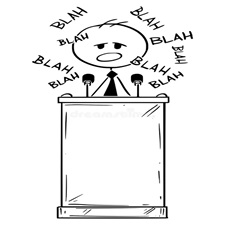

o Gain dexterity (good for coding).
o Understand structures and relationships (also good for coding).
o Frustrating, but so satisfying when you get it right (same as coding).

o Formulaic and boring.
o No real content, more like an adlib.
o No musical talent needed.
o Great cardio without feeling like cardio.
o Builds confidence and balance.
o Gain resilience through constantly wiping out.
o Dangerous, like for everyone.
o Entitled sense of belonging.
o Just use roads with bike lanes or bike trails. Please.
o Developes parts of your brain that you don't even know exist.
o Satisfying when you make something you're proud of.
o Relatively inexpensive hobby, unless you go crazy with it.

o Boring.
o Tend to talk about nothing, for long periods of time.
o Forced to be around them on holidays.
o It feels good to foster life.
o If you do it right, you get food.
o Makes the world around you prettier.
o Bad for the environment.
o Visually unexciting.
o Waste of space.
o Good for family time.
o Builds problem solving skills.
o Possibility for bragging rights.
o Takes away from human interactions and productivity.
o Builds no skills.
o Drives anxiety through the roof.